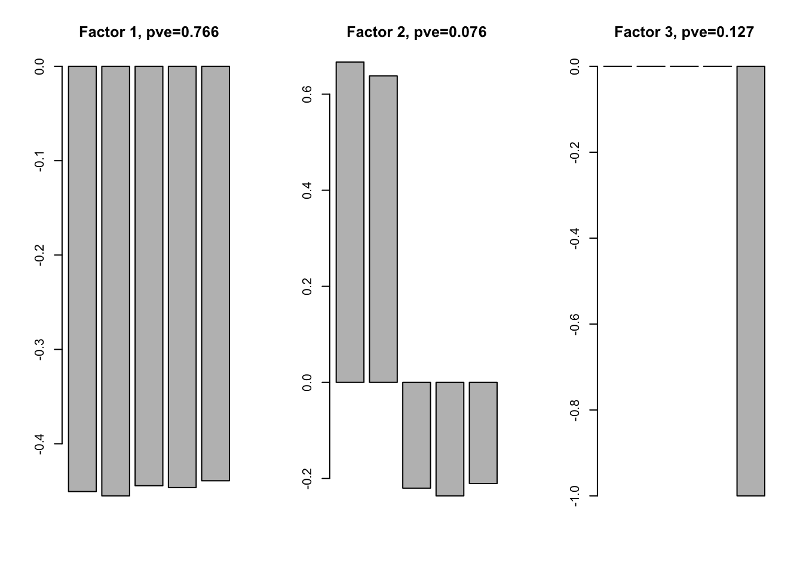
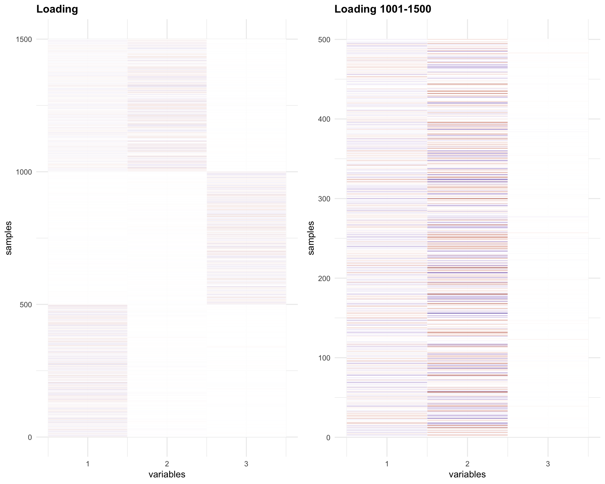
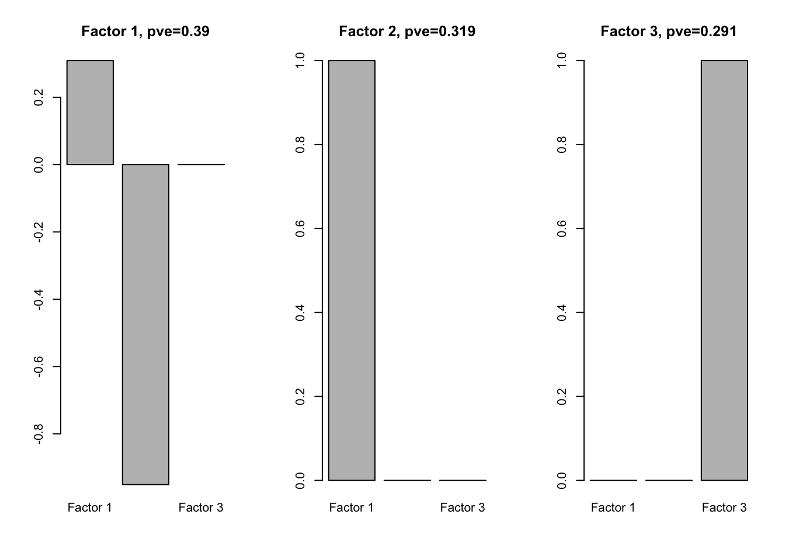
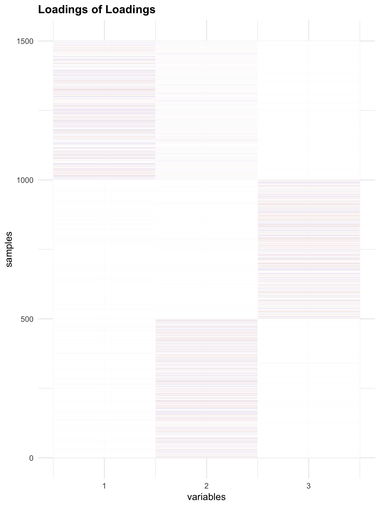
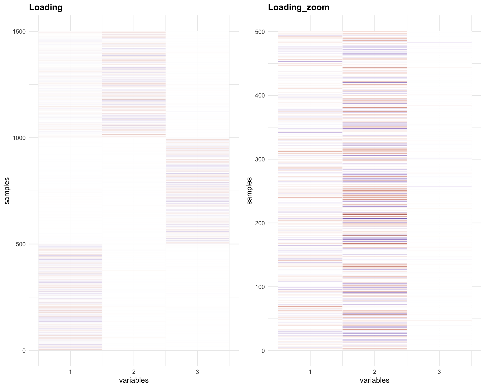
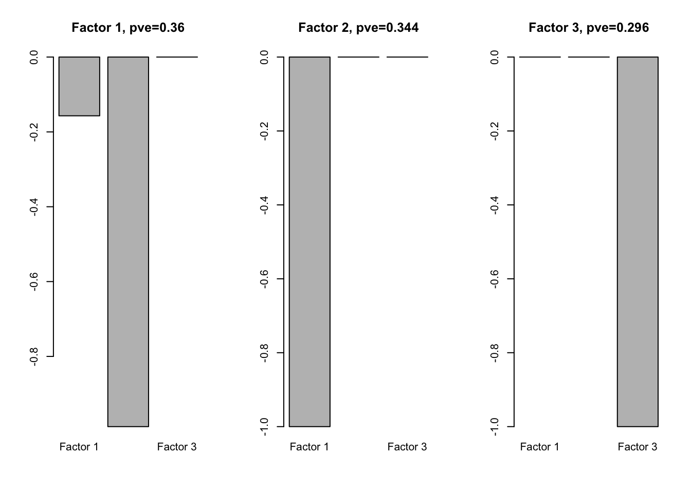
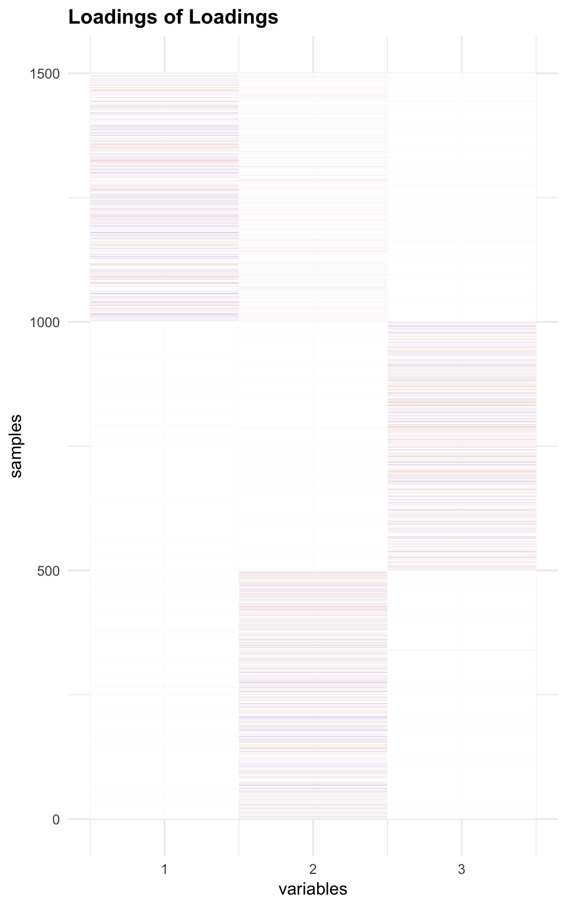

Last updated: 2018-07-14
Code version: 2c8172d
library(flashr); library(ggplot2); library(reshape2)Plot function:
plot_HP = function(title_name, mat, absolute = TRUE){
p1 = ggplot(data = mat, aes(Var2, Var1, fill = value))+geom_tile(color = "white")+
scale_fill_gradient2(low = "darkblue", high = "darkred", mid = "white",
midpoint = 0, space = "Lab") + labs(title = title_name, y = "samples", x = "variables") +
# scale_fill_gradient2(low = "white", high = "grey6", mid = "grey9", midpoint = 0.41, limit = c(0,0.82), space = "Lab") + labs(title = title_name, y = "samples", x = "variables") +
theme_minimal() + theme(legend.position="none",plot.title = element_text(size = 12.9, face = "bold"))
p1
}In flash model, we have \[ Y_{n\times p} = L_{n \times k}F_{p\times k}^{T} + E_{n\times p} \] We could find some patterns of the data Y based on the factors in F. But the patterns depend on the loadings L. We run flash on L again \[ L_{n\times k} = O_{n\times r} A_{k\times r}^{T} + R_{n\times k} \]
From the factors A, we can check the dependence of factors in F.
I simulate Y with 5 conditions (p = 5). Some have equal effect in all conditions; some have equal effect in consition 3, 4 and 5, but stronger effect in condition 1 and 2 (all effects are in the same direction); some have effect only in the last condition.
Summary from the simulation:
From the simulation, we see factors with loadings both positive or both negative, and also see cases where one loading is positive and the other is negative.
Question:
We interprete the factor as a pattern in the data Y. For example, in GTEx data, we say a factor with approximately equal weight for every tissue reflects that many eQTLs have similar effects accross all tissues. I doubt whether our interpretation is correct. The pattern in Y depends on L. If some rows of L have 2 large entries, then those samples depend on 2 factors. The pattern in Y is actually a linear combination of the 2 factors. Therefore, we perform factor analysis on L again. Using the new factors A, we check if there is a linear combination of factors F.
My question is that the actual pattern in Y is still depending on the new loading O. The rows of loading O could also have several large entries, which suggests that the pattern in Y depends on a combination of factors. I don’t have an example for this case yet. So I think we cannot say the factors summarize the patterns in the data.
The pattern in the data depends on loadings, and we don’t have any summary about the loadings.
flashdata = function(n, FF, LL, Lsd, err_sd){
k = ncol(FF)
p = nrow(FF)
LLL = matrix(0,0,k)
for(i in 1:nrow(LL)){
temp = matrix(rnorm(n * k, sd = Lsd), n, k)
direction = c(sign(temp[,1]))
temp2 = direction * abs(temp)
LLL = rbind(LLL, t(t(temp2) * LL[i,] ))
}
Ytrue = LLL %*% t(FF)
Y = Ytrue + matrix(rnorm(n*nrow(LL)*p, sd = err_sd), n*nrow(LL), p)
return(list(Y = Y, Ytrue = Ytrue))
}set.seed(1)
FF = cbind(c(1,1,1,1,1), c(1,1,0,0,0), c(0,0,0,0,1))
LL = rbind(c(1,0,0), c(0,0,1), c(0.3,0.7,0))
data = flashdata(500, FF, LL, 4,0.5)Using greefy+backfit flash method:
f1 = flash(data$Y, greedy = TRUE, backfit = TRUE)fitting factor/loading 1fitting factor/loading 2fitting factor/loading 3fitting factor/loading 4ff1 = flash_get_ldf(f1)$f; Loadings1 = flash_get_ldf(f1)$l * flash_get_ldf(f1)$dThe factors are
par(mfrow=c(1,3))
for(i in 1:ncol(ff1)){
barplot(ff1[,i], main = paste0('Factor ', i, ', pve=', round(flash_get_pve(f1)[i],3)))
}
The factor 1 and 3 reflect the pattern in the simulated data. But for factor 2, we expect they have effect in the same direction. Factor 2 is not a pattern in the data. The real pattern is a combination of factor 1 and 2.
Let’s check the L matrix
melted_Loading = melt(Loadings1)
melted_Loading_zoom = melt(Loadings1[1001:1500,])
p1 = plot_HP('Loading', melted_Loading)
p2 = plot_HP('Loading 1001-1500', melted_Loading_zoom)
gridExtra::grid.arrange(p1,p2, ncol = 2)
The Loadings for the last 500 samples (1001-1500) have opposite sign for factor 1 and 2.
We perform flash analysis on L:
f1.l = flash(Loadings1, greedy = TRUE, backfit = TRUE)fitting factor/loading 1fitting factor/loading 2fitting factor/loading 3fitting factor/loading 4f1l.f = flash_get_ldf(f1.l)$f
row.names(f1l.f) = paste0('Factor ', 1:3)
par(mfrow=c(1,3))
for(i in 1:ncol(f1l.f)){
barplot(f1l.f[,i], main = paste0('Factor ', i, ', pve=', round(flash_get_pve(f1.l)[i],3)))
}
We see that one loading is positive and the other is negative.
Check loadings (O) of Loadings:
melted_LLoading = melt(flash_get_ldf(f1.l)$l * flash_get_ldf(f1.l)$d)
p3 = plot_HP('Loadings of Loadings', melted_LLoading)
p3
f2 = flash_add_fixed_f(data$Y, FF=cbind(c(1,1,1,1,1), c(1,1,0,0,0), c(0,0,0,0,1)))
f2 = flash_backfit(data$Y, f2)
Loading.fix = flash_get_ldf(f2)$l * flash_get_ldf(f2)$d
# Check loadings
melted_LoadingFix = melt(Loading.fix)
melted_LoadingFix_zoom = melt(Loading.fix[1001:1500,])
p4 = plot_HP('Loading', melted_LoadingFix)
p5 = plot_HP('Loading_zoom', melted_LoadingFix_zoom)
gridExtra::grid.arrange(p4,p5, ncol = 2)
The Loadings for the last 500 samples (1001-1500) have same sign for factor 1 and 2.
Flash on loadings
f2.l = flash(Loading.fix, greedy = TRUE, backfit = TRUE)fitting factor/loading 1fitting factor/loading 2fitting factor/loading 3fitting factor/loading 4f2l.f = flash_get_ldf(f2.l)$f
row.names(f2l.f) = paste0('Factor ', 1:3)
par(mfrow=c(1,3))
for(i in 1:ncol(f2l.f)){
barplot(f2l.f[,i], main = paste0('Factor ', i, ', pve=', round(flash_get_pve(f2.l)[i],3)))
}
Check Loading of Loaing
melted_LLoading.fix = melt(flash_get_ldf(f2.l)$l * flash_get_ldf(f2.l)$d)
p6 = plot_HP('Loadings of Loadings', melted_LLoading.fix)
p6
sessionInfo()R version 3.4.4 (2018-03-15)
Platform: x86_64-apple-darwin15.6.0 (64-bit)
Running under: macOS High Sierra 10.13.5
Matrix products: default
BLAS: /Library/Frameworks/R.framework/Versions/3.4/Resources/lib/libRblas.0.dylib
LAPACK: /Library/Frameworks/R.framework/Versions/3.4/Resources/lib/libRlapack.dylib
locale:
[1] en_US.UTF-8/en_US.UTF-8/en_US.UTF-8/C/en_US.UTF-8/en_US.UTF-8
attached base packages:
[1] stats graphics grDevices utils datasets methods base
other attached packages:
[1] reshape2_1.4.3 ggplot2_3.0.0 flashr_0.5-12
loaded via a namespace (and not attached):
[1] Rcpp_0.12.17 bindr_0.1.1 compiler_3.4.4
[4] pillar_1.2.2 git2r_0.21.0 plyr_1.8.4
[7] iterators_1.0.9 tools_3.4.4 digest_0.6.15
[10] evaluate_0.10.1 tibble_1.4.2 gtable_0.2.0
[13] lattice_0.20-35 pkgconfig_2.0.1 rlang_0.2.1
[16] Matrix_1.2-14 foreach_1.4.4 yaml_2.1.19
[19] parallel_3.4.4 ebnm_0.1-12 bindrcpp_0.2.2
[22] gridExtra_2.3 withr_2.1.2 stringr_1.3.0
[25] dplyr_0.7.4 knitr_1.20 rprojroot_1.3-2
[28] grid_3.4.4 glue_1.2.0 R6_2.2.2
[31] rmarkdown_1.9 ashr_2.2-7 magrittr_1.5
[34] backports_1.1.2 scales_0.5.0 codetools_0.2-15
[37] htmltools_0.3.6 MASS_7.3-50 assertthat_0.2.0
[40] softImpute_1.4 colorspace_1.3-2 labeling_0.3
[43] stringi_1.2.2 lazyeval_0.2.1 pscl_1.5.2
[46] doParallel_1.0.11 munsell_0.4.3 truncnorm_1.0-8
[49] SQUAREM_2017.10-1This R Markdown site was created with workflowr